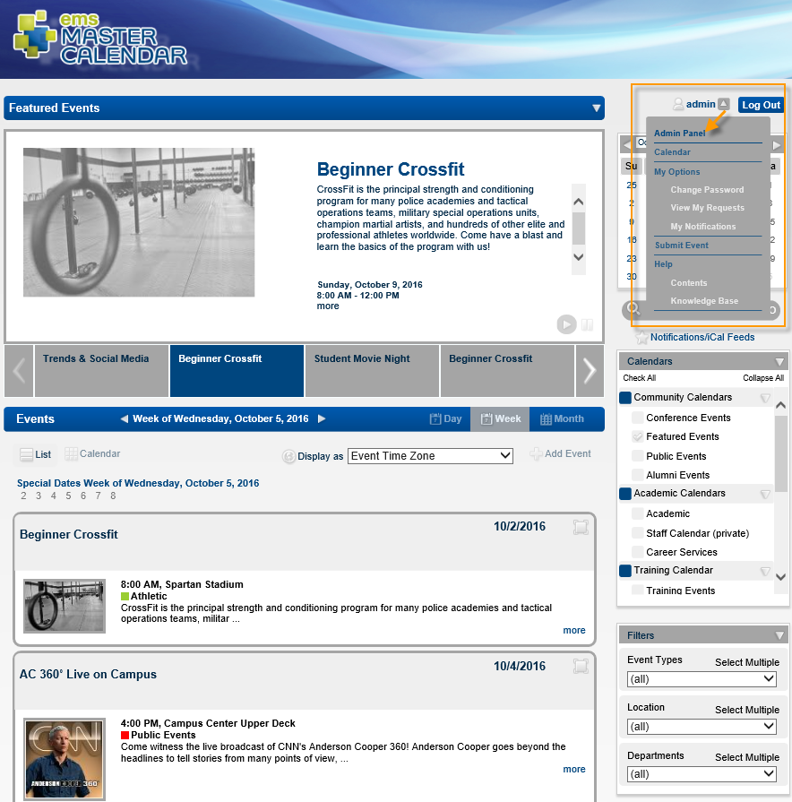
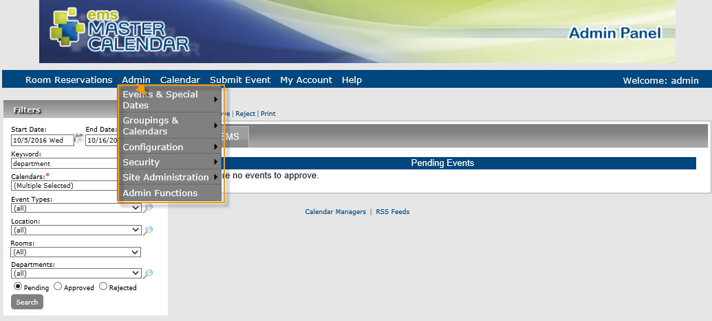
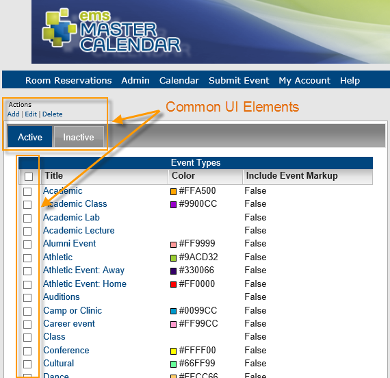

Admin Interface Overview
- EMS Master Calendar has a special "Admin Panel" for system administration.

- Selecting this menu option will take you to the EMS Master Calendar Admin Panel, which controls system behavior for EMS Master Calendar. The Admin menu points to many of the settings you will work with during administration and setup.

- On many of the pages that you can access from this Admin menu, you will encounter a list view of predefined settings with basic Add, Edit, Delete options and Active/Inactive list tabs:

- Edit/Save Behavior: To work with many list items, you will have to select them (individually or all at once) and select an Edit menu option. Once you have made changes, you will have to confirm and finalize by saving the item, after which you will return to the list where the item appears.
- Add/Remove Options: In any list view, you will often be able to add or remove list items. Adding a new item will often launch a dialog box where you add detail and definition, and upload associated files. Deleting an existing item will typically remove it from selection lists for further use, but will not remove it from existing records.
- Activate/De-activate Options: Many list items can be edited to active or inactive (on separate tabs) using an Active checkbox. Inactive items generally will not be in use in Master Calendar and will not appear to users. This method allows you to control the list item without deleting it from your database.